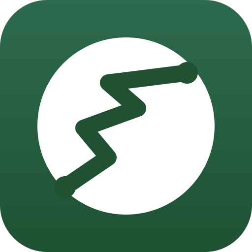

Vlastní trasy
Sestav trasu klikáním do mapy nebo ji importuj přímo ze stránky mapy.com. Plánovací API spočítá přesnou geometrii.

Trasy pro mapy.comUkládej, organizuj a sdílej vlastní trasy. Bez opuštění mapy.com, bez API klíčů, bez sledování.
Bohatá funkcionalita zabalená do nenápadného overlaye, který si sedne nad mapy.com a nikam jinam se nedere.
Sestav trasu klikáním do mapy nebo ji importuj přímo ze stránky mapy.com. Plánovací API spočítá přesnou geometrii.
Každá uložená trasa se objeví jako barevné kolečko v místě svého středu. Po kliknutí se rozbalí celá stopa.
Pokud máš mnoho tras blízko sebe, automaticky se sloučí do shluku. Přiblížením se zase rozpadnou na jednotlivé tečky.
Náhled výškového profilu, celkové převýšení, odhad doby trvání podle Naismithova pravidla pro pěší trasy.
Organizuj trasy do složek — třeba podle regionu, ročního období nebo náročnosti. Vlastní popisky, barvy a fotografie.
Označ trasu jako sdílenou a ostatní uživatelé ji uvidí ve své sekci „Komunitní trasy". Žádné jméno se nezveřejňuje.
Líbí / nelíbí na komunitních trasách. Anonymní, jeden hlas na uživatele.
Automatická detekce: okruh, tam-a-zpět, jednosměrná. Plus obtížnost (zelená / červená / černá) a indikátor parkování.
Žádné reklamy, žádné analytiky, žádné cookies. Tvoje jméno ani e-mail se nikdy nedostane mimo tvůj počítač.
Stáhni rozšíření z Chrome Web Store nebo si načti vývojářskou
verzi přes chrome://extensions/ → vývojářský
režim → Načíst rozbalené.
Klikni na ikonu rozšíření v liště prohlížeče a vyber Přihlásit se přes Seznam. Otevře se standardní OAuth okno Seznamu — schválíš a vrátíš se. Hotovo.
Po načtení uvidíš v horní liště tlačítko Trasy. Klikni na něj — otevře se panel s tvými uloženými trasami (zatím prázdný).
Buď klikni na + Nová trasa a postupně klikej na mapu pro start, průjezdové body a cíl. Nebo si naplánuj trasu přímo v mapy.com a stiskni Importovat aktuální trasu.
Pojmenuj trasu, vyber obtížnost, přidej popis, fotografie nebo informaci o parkování. Rozšíření samo dopočítá délku, dobu trvání a převýšení.
Pokud trasu chceš sdílet s ostatními uživateli rozšíření, v editaci zaškrtni Sdílet s komunitou. Tvoje jméno se nezveřejní — jen samotná trasa, popis a fotky.